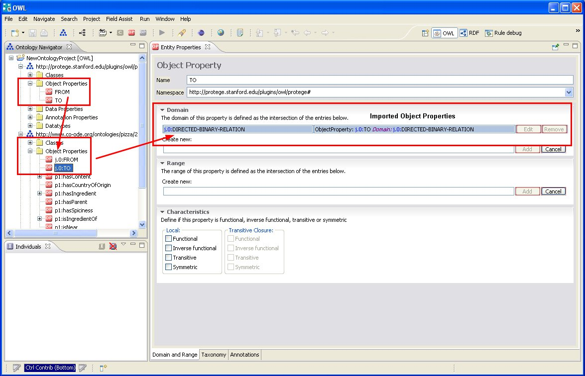
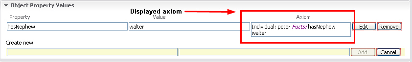
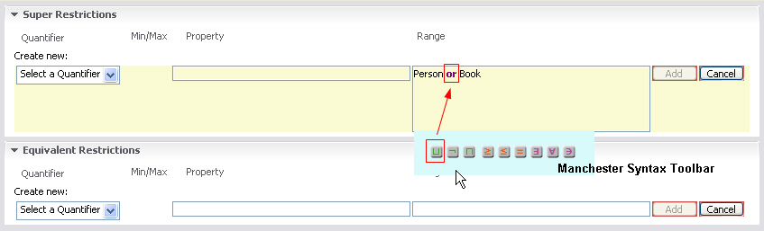

This page explains the preference settings of the OWL Editor. As for all other preferences you can access the preference dialog via Window >> Preferences. Here, in the "OWL Preferences" section you can customize the following features.
Essentially, in the OWL Editor preferences you can configure three different things::
Select the "Show Imported Axioms" check box to get the axioms displayed that are imported from other ontologies. In the Entity Properties Panel the rows containing such imported axioms are highlighted with a light blue background. Additionally, a tool tip shows the source ontology the axiom was imported from.
Note, that imported axioms that are highlighted by the GUI are immutable. They can only be changed at the ontology where they are defined.
Selecting the "Show Imported Axioms" option also shows all imported classes and properties in the Ontology Navigator. Sometimes it is useful to switch on the QNames or URI option for showing ontology labels to better distinguish between entities defined in different ontologies.

Select the check box "Show Axioms in GUI" to have the toolkit display the complete axioms in the Entity Properties panel. A new column will be added to the panel which contains the axioms in Manchester Syntax.

Selecting "Use Toolbar for Complex Class Editor" will enable the Manchester Syntax toolbar. This toolbar provides some buttons to enter keywords from the Manchester Syntax into text fields that can take complex class expressions. For more information on the Manchester Syntax and the toolbar, see Manchester Syntax.

In addition to pure OWL settings you you can specify the languages that can be selected in appropriate drop-down menus in the "Language Preferences" of the Preferences dialog.
OWL annotations such as rdfs:label or datatype property values can come in different languages, and thus are combined with a language attribute. The list of languages that is available when creating the annotations can be configured in this dialog box, i.e. you can add new languages or change their order. The default languages are:
This list is also used for selecting the languages for the entity labels that are displayed throughout the toolkit.